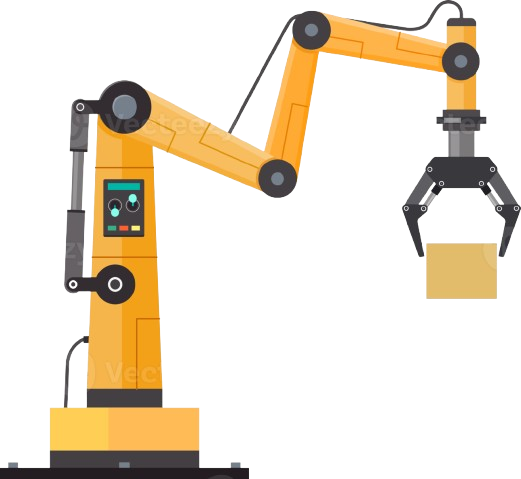

- ¿Qué es ArtiBot?
ArtiBot es un proyecto escolar que busca acercar a los estudiantes al mundo de la robótica moderna.
Mediante un brazo robótico controlado por Arduino UNO, los alumnos comprenden cómo se integran
sensores, servomotores y programación para imitar los movimientos humanos con precisión.

- Objetivos del proyecto
El objetivo principal es fomentar la comprensión práctica de la automatización,
aplicando los conocimientos de electrónica, mecánica y programación en un solo dispositivo funcional.
➖ Aplicar conceptos de robótica educativa.
➖ Desarrollar la lógica de programación en sistemas reales.
➖ Comprender el funcionamiento de sensores y servomotores.
➖ Promover la creatividad y el trabajo en equipo.
- Tecnologías utilizadas
El proyecto ArtiBot emplea tecnologías accesibles y didácticas:
➖ Microcontrolador Arduino UNO
➖ Sensores de movimiento y potenciómetros
➖ Servomotores para articulaciones
➖ Piezas fabricadas con impresión 3D
Importancia educativa
Este proyecto demuestra cómo la robótica puede convertirse en una herramienta educativa poderosa. Permite a los alumnos explorar conceptos de ingeniería y tecnología a través de la práctica, acercándolos a los desafíos del mundo industrial moderno.